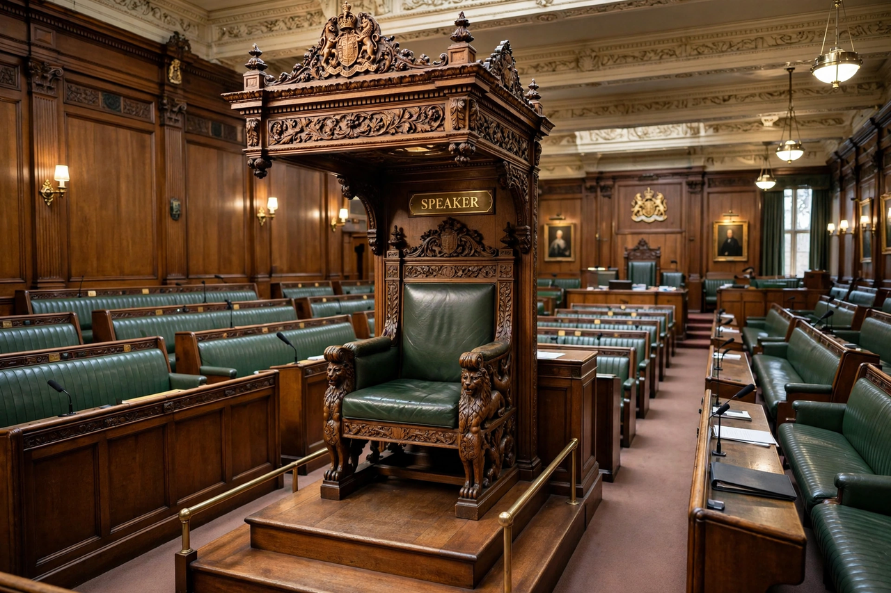

Presiding officer
From Wikipedia, the free encyclopedia

A presiding officer is the person who presides over a deliberative assembly — a legislature, council or meeting — chairing debates, enforcing the rules of procedure, recognising speakers, putting questions to a vote and maintaining order. In national legislatures the office usually bears a specific title: Speaker, President, or Chairman, such as the Speaker of the United States House of Representatives, the Speaker of the House of Commons or the President of the United States Senate (the Vice President).
Functions
Presiding officers interpret and enforce standing orders, select amendments, discipline members (suspension, 'naming'), protect the rights of minorities, and represent the chamber to the head of state and the public. Many also hold administrative responsibility for the legislature's staff, security and estate.
Impartiality versus partisanship
Two traditions contrast: the British Speaker resigns from their party, is conventionally unopposed at elections and acts as a scrupulously neutral umpire; the American Speaker is the partisan leader of the majority party and a central political figure. Most legislatures fall between the poles; in the US Senate, the president pro tempore is largely ceremonial, with daily presiding rotated among junior majority senators.
Selection
Presiding officers are usually elected by the chamber at the start of a term — in the Commons by secret ballot since 2009. Historic holders who defined their offices include William Lenthall (who defied Charles I in 1642), Arthur Onslow, and in the US Henry Clay and Sam Rayburn.